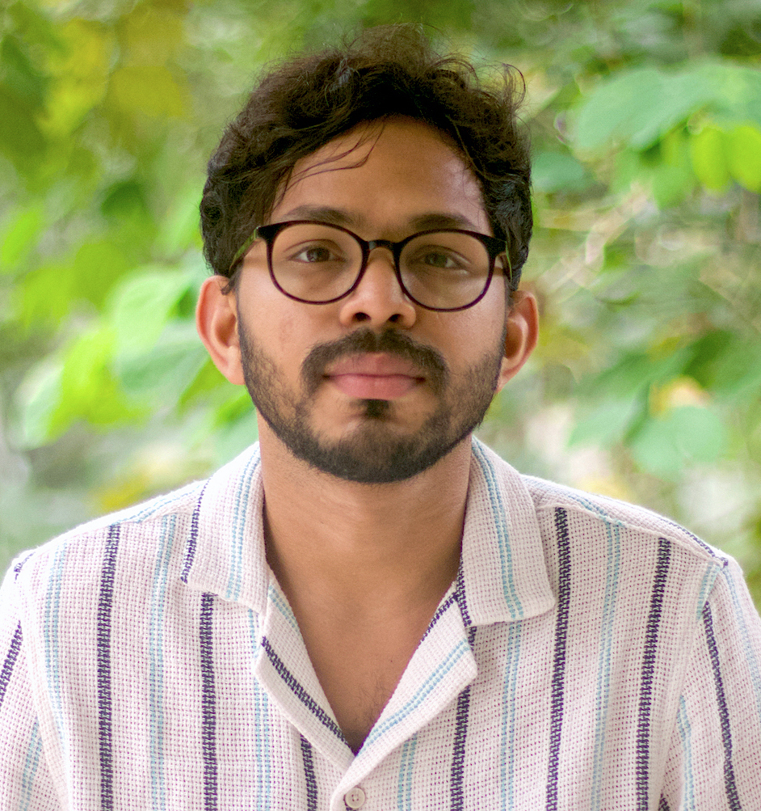

Jishnu Suresh

I am a Henri Poincaré Fellow at the Observatoire de la Côte d'Azur, Nice, France. My primary research focuses on the search for the stochastic gravitational-wave background (SGWB), which could originate from cosmological or astrophysical sources, using data from the LIGO, Virgo, and KAGRA (LVK) detectors. We have placed the most stringent bounds on the energy density of SGWBs using the latest LVK observational data and produced the first upper-limit maps of the gravitational-wave sky across every frequency bin. We expect that current efforts will lead to significant progress in the coming years, potentially resulting in the first detection of SGWBs.
During my Ph.D., I worked on various aspects of alternative theories of gravity, exploring the thermodynamic properties of black hole solutions through the lens of Geometrothermodynamics, a formalism based on concepts from differential geometry. In the past, I also examined different dark energy models and methods to characterize them.
Academic history (in the reverse chronological order):
- Henri Poincaré Fellow, October 2024 -- present
ARTEMIS,
Observatoire de la Côte d'Azur
Nice, France.
- Post-doctoral fellow, October 2021 -- September 2024
Centre for Cosmology, Particle Physics and Phenomenology (CP3),
Institute de Recherche en Mathématique et Physique (IRMP),
Université catholique de Louvain, Belgium.
- Post-doctoral fellow, February 2019 -- September 2021
Institute for Cosmic Ray Research (ICRR),
University of Tokyo, Japan.
- Post-doctoral fellow, August 2016 -- January 2019
The Inter-University Centre for Astronomy and Astrophysics (IUCAA),
Pune, India.
- Ph.D. Physics, September 2014 -- August 2016
Cochin Univeristy of Science and technology (CUSAT),
Kochi, Kerala, India.
- University Grant Commission Research Fellow, November 2012 -- September 2014
Department of Physics,
Cochin Univeristy of Science and technology (CUSAT),
Kochi, Kerala, India.
You can find the details in my CV
My research interests
My primary research interest at present is searches for stochastic gravitational wave background, superposition of sources
too weak to detect individually, using ground-based interferometers.
Topics of my interest include:
-
Gravitational Waves (GW)
-
Theoretical aspects of general theory of gravity
Group
I am a post-doctoral fellow in the Data analysis in HEP and GW experiments research group led by
Giacomo Bruno, at the Centre for Cosmology, Particle Physics and Phenomenology (CP3), Institute de Recherche en Mathématique et Physique (IRMP), Université Catholique de Louvain. The Louvain GW group has been contributing a significant effort to the search for stochastic gravitational wave background (SGWB) and the publication of its results. Furthermore, the group actively works on developing and maintaining different analysis pipelines used in the LIVO-Virgo-KAGRA stochastic group.
The GW group works in different frameworks, analyzing the data from ongoing GW missions, and equipping data analysis tools for future missions from a multi-messenger cosmology and astrophysics framework.
Other Contributions from the GW group:
Millisecond pulsars are one of the potential candidates contributing to the SGWB observable in the ground-based gravitational-wave detectors. Our group has published a search that can set constraints on the ensemble properties of neutron stars, like their average ellipticity, from cross-correlation-based SGWB measurements.
The group has been contributing to developing mock data sets for the SGWB studies. Assuming future detector sensitivity, members of this group have contributed to the generation of five-year-long data sets.
Recently, the Louvain group has been investigating the possibilities of SGWB from pulsar glitches. We have explored the ability of SGWB measurement to constrain the pulsar glitch properties. We expect a paper to be online soon.
We expect distinct sources with different spectral shapes to be the constituents of SGWB. This would lead to a situation where there are breaks in the power law for the background. Hence, one of the first questions that will come up after the first-ever detection of SGWB will be how to relate the SGWB signal to the sources that contribute to it (while extracting the individual source contribution, minimizing the bias in the estimator will also be necessary). Our group tries to address how to separate distinct anisotropic backgrounds with (sufficiently) different spectral shapes. We are setting up an analysis to look for multiple astrophysical SGWBs jointly.
Given the growing interest in the broader Belgian gravitational wave community in Stochastic Gravitational-Wave Background-related studies, we decided to bring together the expertise in this field and arrange a meeting at UCLouvain. Looking forward to this direction, we have successfully organized a, “Gravitational Wave Orchestra 2022”, workshop from September 8 to 9, 2022. In this workshop, we had over fifteen overview talks from people who worked on theoretical and data analysis aspects of the Stochastic Gravitational-Wave Background. These talks included updates from LIGO-Virgo-KAGRA, LISA, and Pulsar Timing Array experiments. This in-person workshop also had around 60 participants from around the world. Because of the great success of this workshop (from the number of speakers and participants and listening to the individual feedback), we are planning to have more Gravitational Wave Orchestra workshops in the coming years. There have been many proposals, including propagating this momentum generated by the UCLouvain workshop to spread worldwide.

Publications and pre-prints
Some of my recent publications and preprints, in the reverse chronological order, is given below.
The entire list of publications can be found at
iNSPIRE and
ORCiD.
-
F. De Lillo J. Suresh, "Estimating Astrophysical Population Properties using a multi-component Stochastic Gravitational-Wave Background Search", [arXiv:2310.05823].
-
K. Z. Yang, J. Suresh , G. Cusin, S. Banagiri, N. Feist, V. Mandic, C. Scarlata and I. Michaloliakos, "Measurement of the cross-correlation angular power spectrum between the stochastic gravitational wave background and galaxy overdensity", Phys.Rev.D 108 (2023) 4, 043025, [arXiv:2304.07621].
-
D. Agarwal J. Suresh, S. Mitra, A. Ain, "Angular power spectra of anisotropic stochastic gravitational wave background: developing statistical methods and analyzing data from ground-based detectors", Phys.Rev.D 108 (2023) 2, 023011, [arXiv:2302.12516].
-
F. De Lillo J. Suresh, A. Depasse, M. Sieniawska, A. L. Miller and G. Bruno, "Probing Ensemble Properties of Vortex-avalanche Pulsar Glitches with a Stochastic Gravitational-Wave Background Search", Phys.Rev.D 107 (2023) 10, 102001, [arXiv:2211.16857].
Contact details:
Address:
Centre for Cosmology, Particle Physics and Phenomenology (CP3)
Institute de Recherche en Mathématique et Physique (IRMP)
Université catholique de Louvain
Chemin du Cyclotron 2, Box L7.01.05
Louvain-la-Neuve, 1348, Belgium.
E-mail:
jishnu.suresh'at'uclouvain.be
Phone:
+32-470-11-8678